① Generalist & Foundation Policies
One model / one recipe across many embodiments and tasks — VLA models and large behavior recipes.
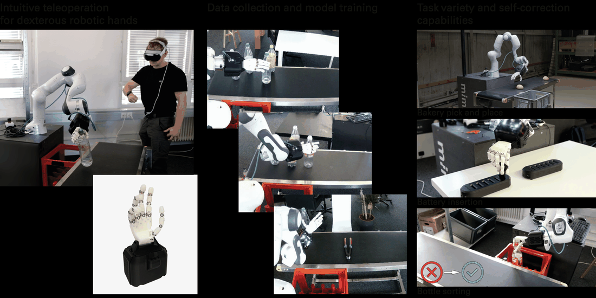
mimic-one: a Scalable Model Recipe for General Purpose Robot Dexterity
A diffusion-policy recipe plus a 16-DoF tendon-driven hand for sample-efficient, smooth real-world humanoid-hand manipulation.
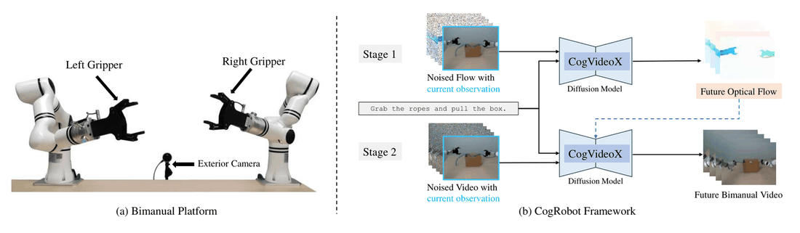
Towards a Generalizable Bimanual Foundation Policy via Flow-based Video Prediction
CogRobot: a bimanual foundation policy that fine-tunes a text-to-video model with optical flow as an intermediate representation, then extracts actions via a diffusion policy.
② Reinforcement Learning & Sim-to-Real Dexterity
Learn dexterity (often in sim, from sparse reward or a few demos) and transfer to real multi-fingered hands.
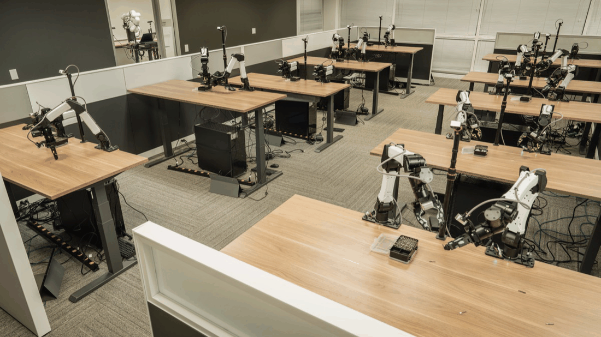
ENPIRE: Agentic Robot Policy Self-Improvement in the Real World
Frontier coding agents run the full real-world robot-learning loop on a physical fleet, reaching 99% pass@8 on dexterous tasks with minimal human effort.
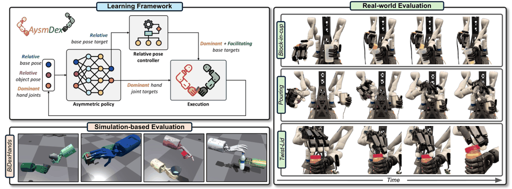
AsymDex: Asymmetry and Relative Coordinates for RL-based Bimanual Dexterity
Demonstration-free RL for bimanual dexterity that exploits hand asymmetry (facilitating vs. dominant hand) and relative hand-to-hand coordinates.
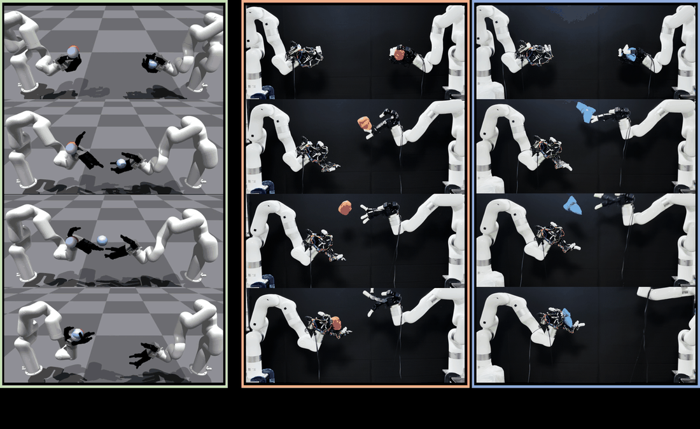
Dynamic Handover: Throw and Catch with Bimanual Hands
Two multi-finger hands learn to throw and catch objects in mid-air via multi-agent RL trained in simulation and transferred to real robots.
③ Bimanual Policies & Benchmarks
Two-arm / two-hand coordination — transfer, functional retargeting, benchmarks and posture-aware policies.

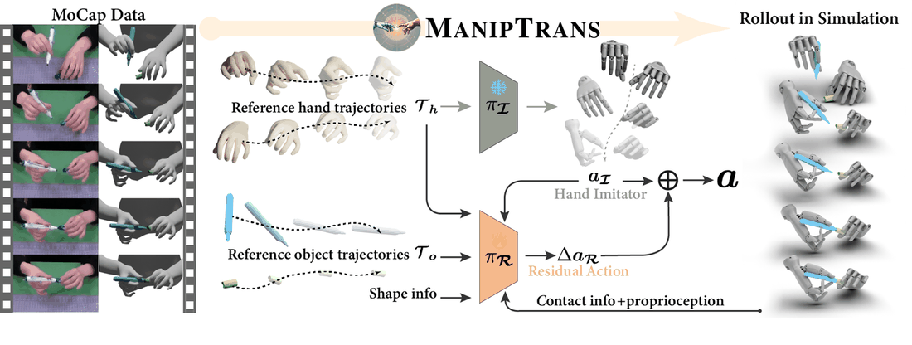
ManipTrans: Efficient Dexterous Bimanual Manipulation Transfer via Residual Learning
A two-stage residual-learning pipeline that transfers human bimanual hand-object motions to dexterous robot hands in simulation, decoupling motion imitation from physical interaction.
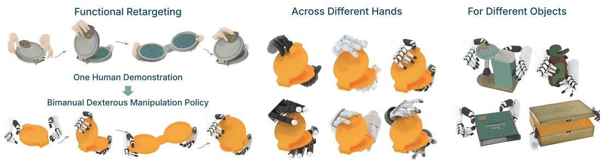
DexMachina: Functional Retargeting for Bimanual Dexterous Manipulation
Curriculum-based functional retargeting that learns bimanual dexterous policies to track object states from human hand-object demonstrations via decaying-strength virtual object controllers.
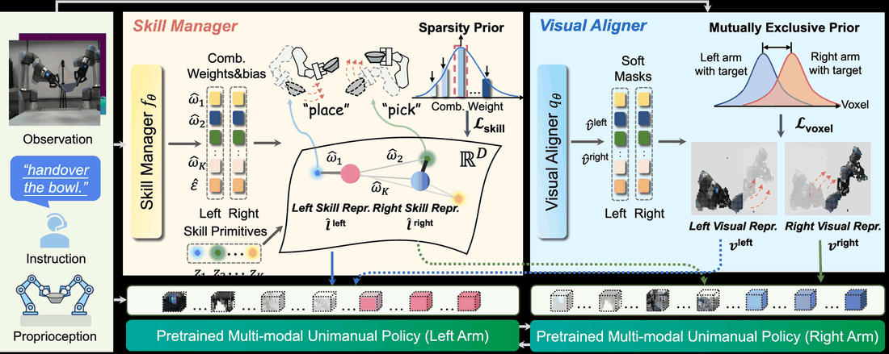
AnyBimanual: Transferring Unimanual Policy for General Bimanual Manipulation
A plug-and-play framework that transfers pretrained unimanual policies into general bimanual manipulation policies with few bimanual demonstrations.
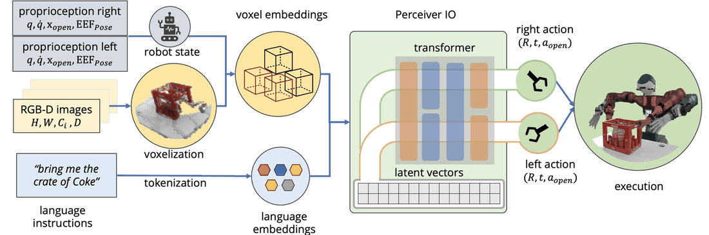
PerAct2: Benchmarking and Learning for Robotic Bimanual Manipulation Tasks
A simulated bimanual manipulation benchmark extending RLBench, plus PerAct2, a language-conditioned behavioral cloning agent that controls two 6-DoF arms with a shared PerceiverIO backbone.
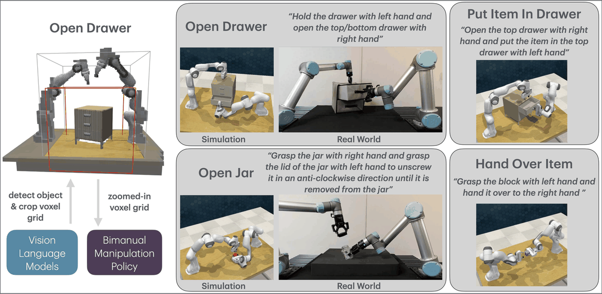
VoxAct-B: Voxel-Based Acting and Stabilizing Policy for Bimanual Manipulation
A language-conditioned, voxel-based bimanual policy that uses VLMs to crop high-resolution voxel grids and learns separate acting and stabilizing arms.
④ Dexterous Grasping
Generalizable multi-fingered grasping — generative, RL, language-guided, and at dataset scale.

AnyDexGrasp: General Dexterous Grasping for Different Hands with Human-level Learning Efficiency
Learn general dexterous grasping for any robotic hand from only hundreds of real-world trials, by decoupling hand-agnostic geometry from hand-specific grasp decisions.
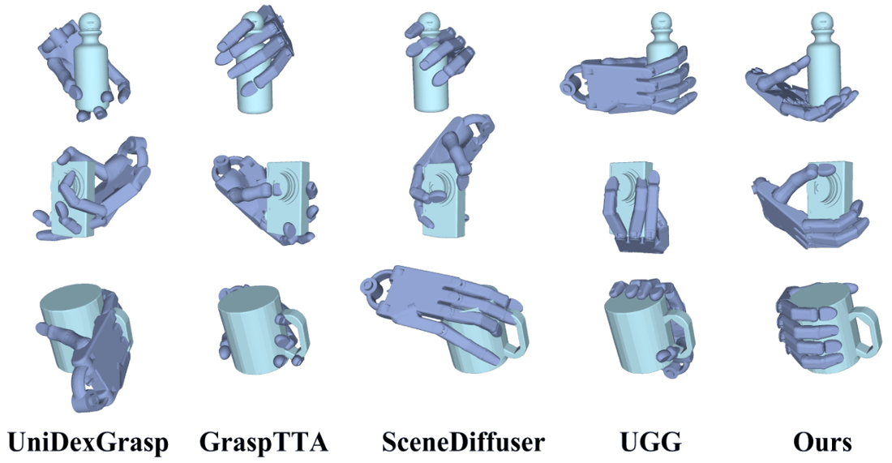
DexGrasp Anything: Towards Universal Robotic Dexterous Grasping with Physics Awareness
A physics-aware diffusion model that generates dexterous Shadow-hand grasps for arbitrary objects, plus the largest public dexterous-grasp dataset.
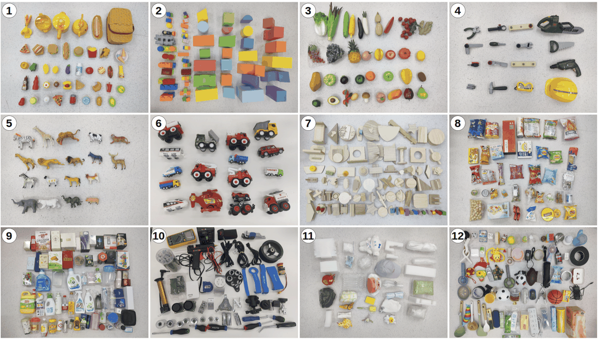
RobustDexGrasp: Robust Dexterous Grasping of General Objects from Single-view Perception
Zero-shot dynamic dexterous grasping of general unseen objects from single-view perception, robust to disturbances.

DexVLG: Dexterous Vision-Language-Grasp Model at Scale
A vision-language-grasp model that predicts language-aligned dexterous grasp poses from single-view RGBD, trained on a 170M-pose synthetic dataset.
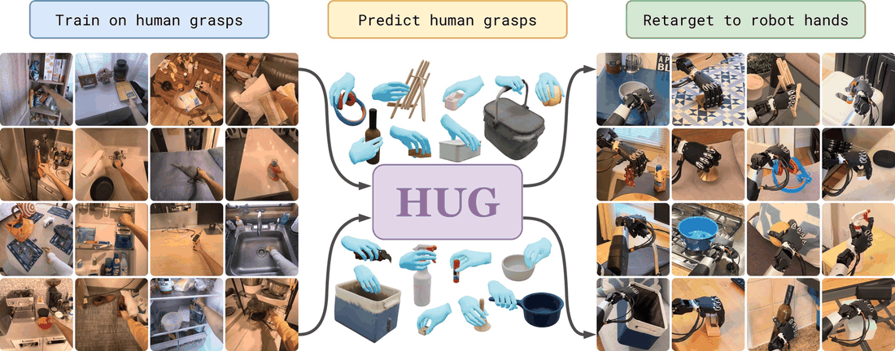
HUG: Human Universal Grasping
A flow-matching model trained purely on egocentric human grasps that predicts MANO hand poses from a single RGB-D image and retargets zero-shot to multiple robot hands.
⑤ Data Generation, Teleop & Human Demos
Scaling data: automated generation, low-cost teleoperation, and egocentric / human-video learning.
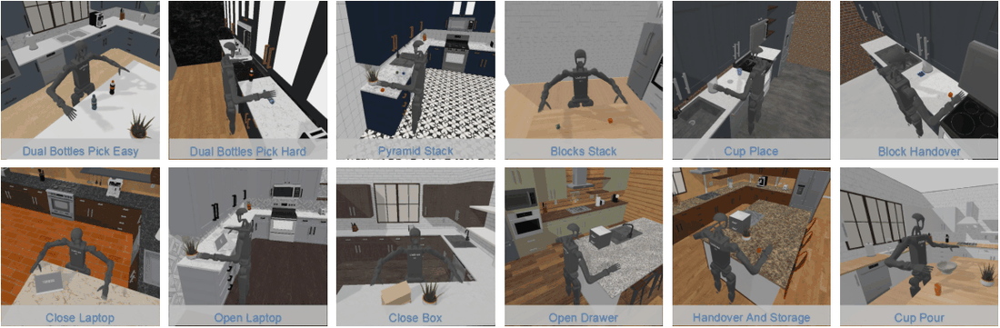
HumanoidGen: Data Generation for Bimanual Dexterous Manipulation via LLM Reasoning
Automated LLM-driven task creation and demonstration collection for bimanual dexterous-hand humanoids, using spatial annotations and MCTS-enhanced reasoning to scale synthetic training data.
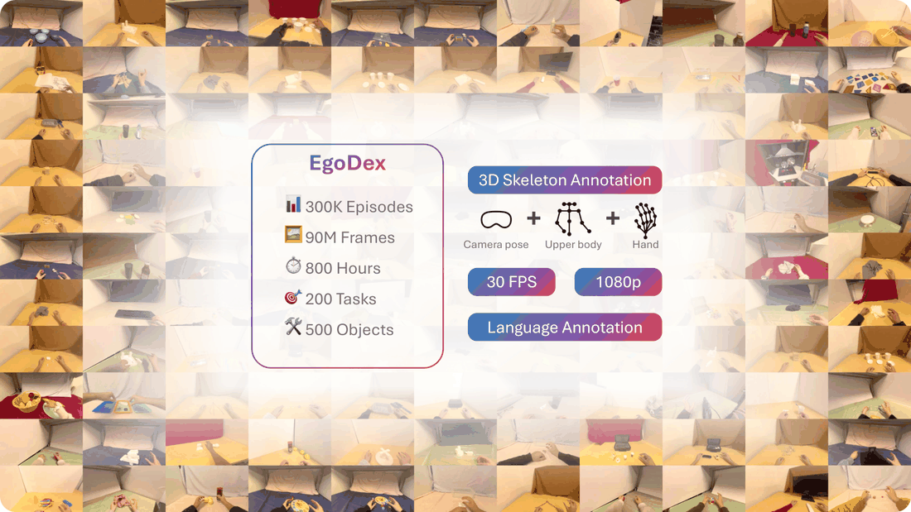
EgoDex: Learning Dexterous Manipulation from Large-Scale Egocentric Video
The largest and most diverse dataset of dexterous human manipulation to date, collected from egocentric Apple Vision Pro video with paired 3D hand tracking.
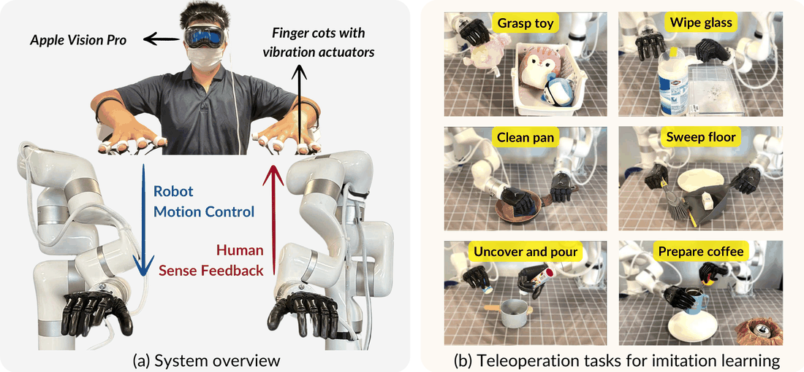
Bunny-VisionPro: Real-Time Bimanual Dexterous Teleoperation for Imitation Learning
Apple Vision Pro-based real-time bimanual dexterous teleoperation with low-cost haptic feedback and built-in safety for collecting imitation-learning demonstrations.
⑥ Perception & Building Blocks
Vision / segmentation foundation models used as perception, reward, or verification signals in the manipulation pipelines above.
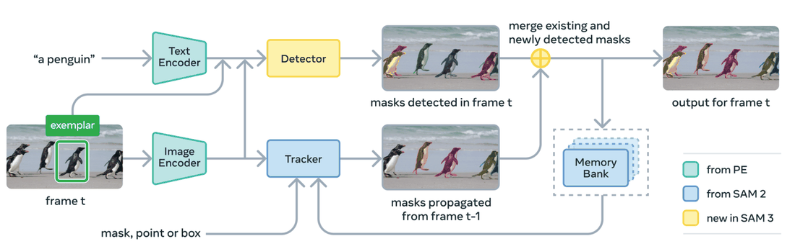
SAM 3: Segment Anything with Concepts
A unified foundation model that detects, segments, and tracks objects in images and video from concept prompts (text noun phrases and/or image exemplars).